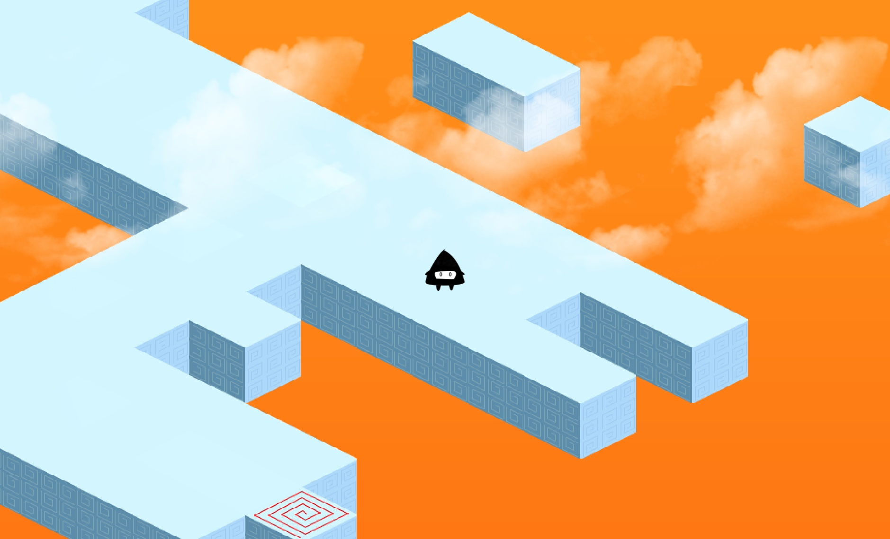
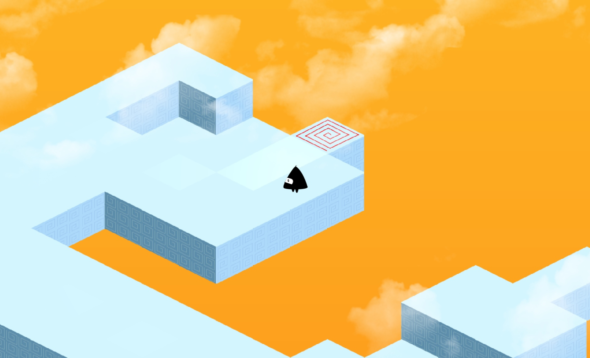

WWDC is the Apple Worldwide Developers Conference. It's held annually, and is used by Apple to showcase some of their newest technologies for the upcoming year! Every year, Apple hosts ~350 Student Scholarship winners worldwide, and I was lucky enough to be one of them! The experience taught me a lot about adapting to quickly-changing technologies and gave me insight into some of Apple's newest APIs and frameworks.
The application process for 2019 involved designing and coding a Swift Playground that creates an interactive experience. I chose to create a sound-based Isometric puzzler, which uses iPad decibel sound input as a main game mechanic. Technologies used include Spritekit, Scenekit and AVFoundation.

